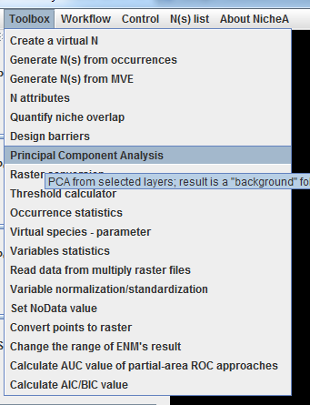
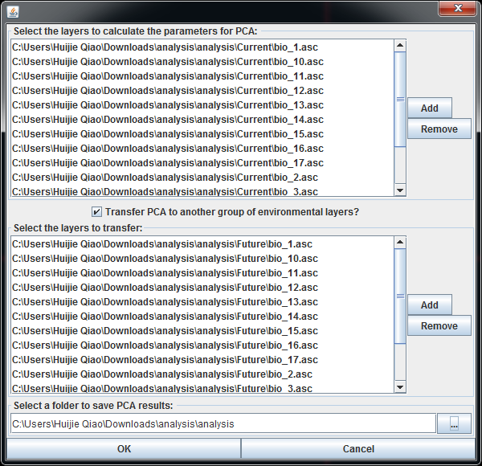
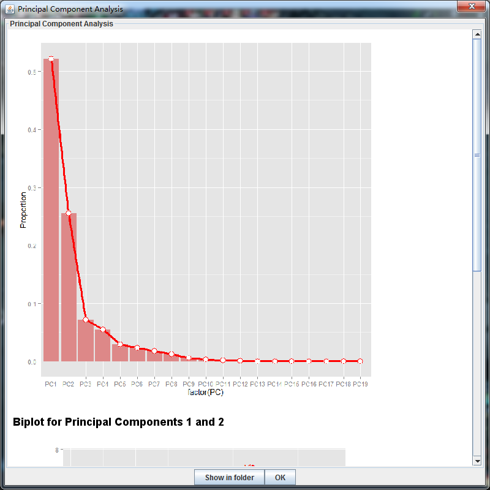
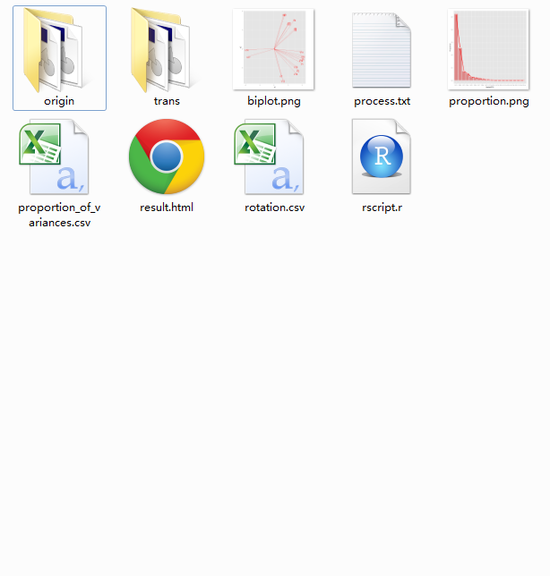
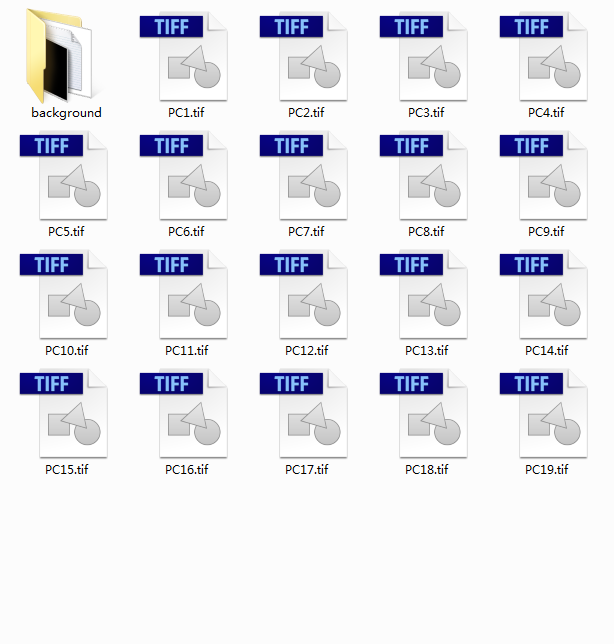

Principal Component Analysis in NicheA
The "Principal Component Analysis" function is used to generate principal components (PC) with
given raster layers using Principal Component Analysis, and transfer to a new group of raster layers or not.
The results are saved as another groups of rasters files in GeoTiff format with the same attributes as the original rasters.
The detail of PCA can be referred via its
Wikipedia page.
A folder named "background" is created in the result folder which can be envoked in NicheA to draw BC directly.
All the PCA related attributes including "rotation" and "proportion of variances"
are saved in the result folder as well.
The process to use "Principal Component Analysis" function in NicheA
1. Click "Principal Component Analysis" in main menu. (Fig. 1)
Figure 1

2. Select the original raster files to generate principal components (Fig. 2). If you want to transfer the PCA to another group of environmental layers, you need to check the
checkbox between two list, and add the raster files to the second list. The number of the raster files in two lists must be equivalent.
Here you can
download the sample for this function. The raster files in the sample were downloaded from Worldclim and
converted by function "Conversion tool for raster file" in NicheA.
Figure 2

3. After a couple of minutes, you can see a dialog to show the result (Fig. 3). You can click "Show in folder" button to see all the results, or click "OK" button to close the dialog.
Figure 3

4. After you click the "Show in folder" button, NicheA will switch to the results (Fig. 4). If you checked the checkbox, the principal components calculated from the first list
will be saved in the "origin" folder, and the transferred principal components will be saved in the "trans" folder. "origin" and "trans" folders have the same structure (Fig.5).
If you didn't want to do a transfer, the result will be saved in the selected folder directly with the same structure as above.
Figure 4

Figure 5
